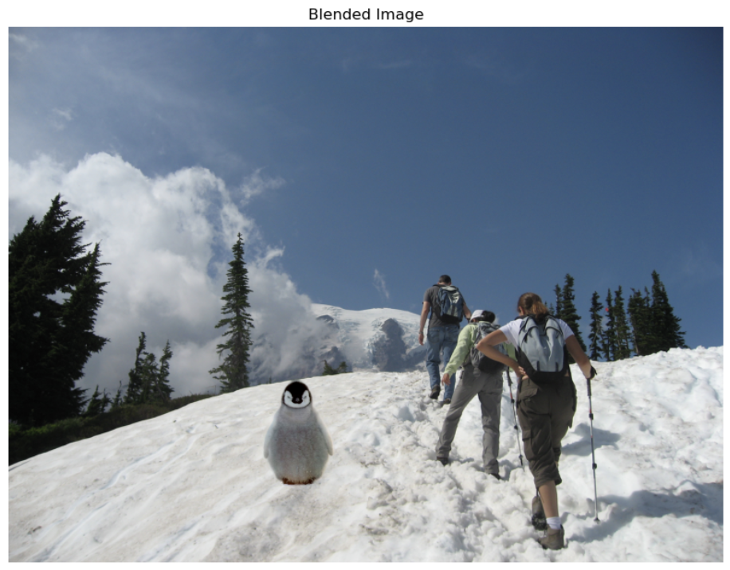

Object Image

Background Image

Blended Image
In this project, we are going to implement Poisson Blending and Mixed Gradient in Bells & Whistles to seamlessly blend an object or texture from a source image into a target image.
In this part, I reconstruct a toy image from its gradients by solving a sparse linear system using least squares.
The process is same as the implementation details: I firstly try to map each pixel to a variable index and then I define a sparse matrix A and
b, which represent the x-gradients and y-gradients of the image. Additionally, I add a constriant for the top-left pixel to anchor the
reconstruction. The system Av = b is then solved using the lsqr method, and
the solution v. Here is my result:

In this part, I implement Poisson blending, which is a wonderful technique that merges an object image into a background image seamlessly through gradient tricks.
The minimization problem can be expressed as:
I first make sure that each pixel in the mask is mapped to a variable, and neighborhoods are in a
sparse matrix A and vector b. For each pixel
in the mask, gradient constraints are enforced: if a neighbor lies within the mask, the gradient
from the object image is preserved. If a neighbor lies outside the mask, the gradient aligns with the
background image. This gives a sparse linear system Av = b
using lsqr. Then I update or copy all pixles in the blended region, so that I can seamlessly
blend the object into the background to produce the good output image.
Object Image
Background Image
Blended Image
Object Image
Background Image
Blended Image
Object Image
Background Image
Blended Image
Object Image
Background Image
Blended Image
Note this image does not blend really well because the dark black sky around the moon doesn’t match the bright blue sky of the background, making it hard to smoothly merge the colors
In Part 2, I created a GIF morph sequence with 45 frames, each with a duration of 30 ms. Since the GIF file was too large to upload to GitHub, I converted it into a YouTube video. You can watch it directly below: